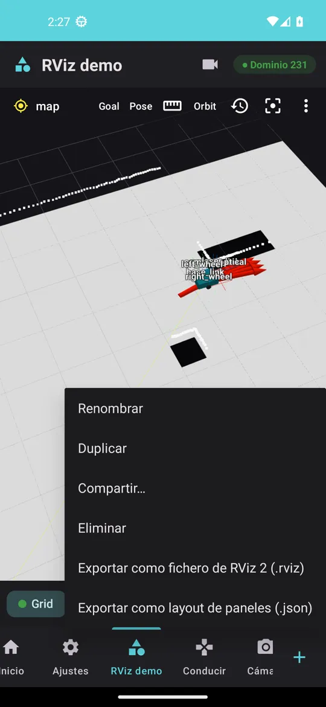
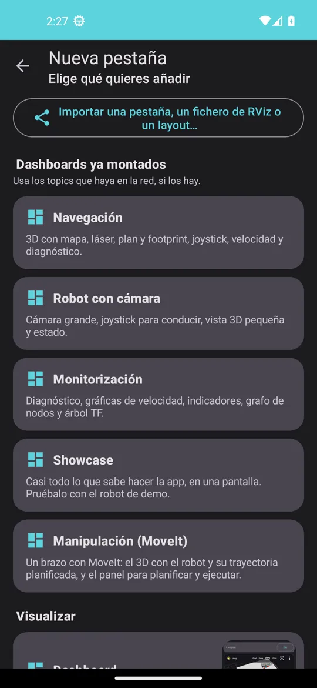

La interfaz
Esta página trata del móvil. En el PC las mismas piezas están en una barra lateral: mira La app de PC.

Barra de abajo: Inicio y Ajustes siempre están. Cada pestaña que creas aparece a su lado, y + añade una nueva. Mantén pulsada una pestaña para renombrarla, duplicarla, compartirla, eliminarla o exportarla. Compartir envía la pestaña (un dashboard, con sus widgets) como un archivo
.json; quien lo recibe la añade con + → Importar una pestaña, un fichero de RViz o un layout. Exportar como… (fichero de RViz 2, layout de paneles o layout de gráficas) aparece cuando la pestaña tiene algo que esos ficheros pueden guardar (Importar y exportar).Barra de arriba: el nombre de la pestaña actual, el botón de grabar (Grabar un vídeo) y la etiqueta de la conexión (Dominio N). Púlsala para abrir Ajustes.
Inicio: el estado de la conexión; qué hay en la red (topics, servicios, acciones, nodos y nodos lifecycle); accesos al grafo de nodos y al árbol TF; tu espacio de trabajo; la tarjeta de la cuenta opcional (Tu cuenta (opcional)); y tarjetas para el recorrido rápido, esta documentación, el apoyo al proyecto, el historial de cambios, el contacto y la privacidad.
Ajustes: red, conexión en segundo plano, perfiles de robot, alertas e idioma.
Añadir una pestaña

Pulsa +. Arriba, Importar una pestaña, un fichero de RViz o un layout… añade una pestaña compartida o convierte la configuración de otra herramienta en pestañas. Después vienen los dashboards ya montados (Navegación, Robot con cámara, Monitorización, Showcase, Manipulación (MoveIt)), que crean un dashboard con sus widgets de una vez. Debajo, los tipos de pestaña están agrupados en Visualizar, Control, Inspeccionar la red y Grabar. Pulsa uno para ver un vídeo corto y lo que hace, ponle nombre (opcional) y pulsa Crear. Algunos tipos piden antes un ajuste, como el topic de la cámara o el de velocidad.
Recorrido rápido
Inicio → Recorrido rápido te enseña las pantallas principales en un minuto.
Grabar un vídeo
Para enseñar cómo se comporta el robot, graba lo que hay en pantalla: el botón de grabar de arriba en
el móvil (Android pide permiso cada vez; la notificación tiene Parar) guarda un MP4 en
Movies/VizMini2. En el PC, Grabar vídeo en la barra lateral (o Ctrl+Mayús+R) graba la
ventana, vista 3D incluida, en ~/Vídeos/VizMini2 (Vídeos\VizMini2 en Windows; necesita
ffmpeg).